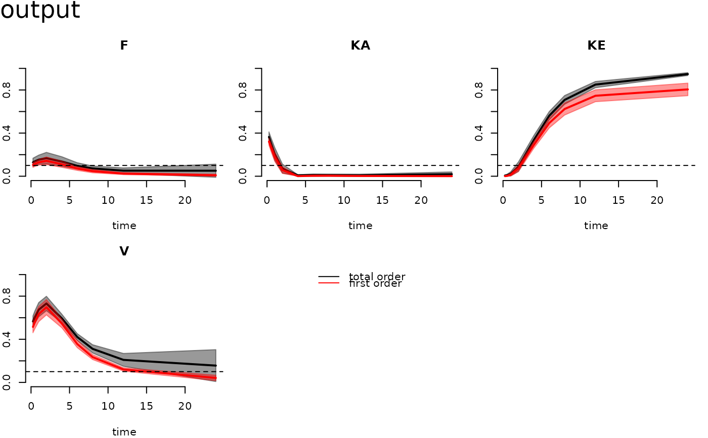
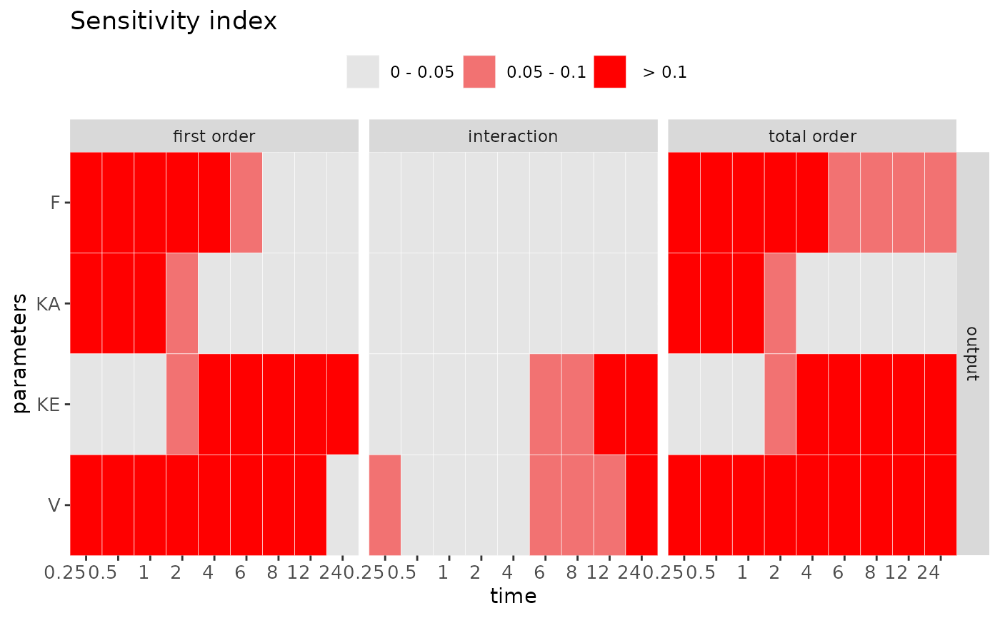
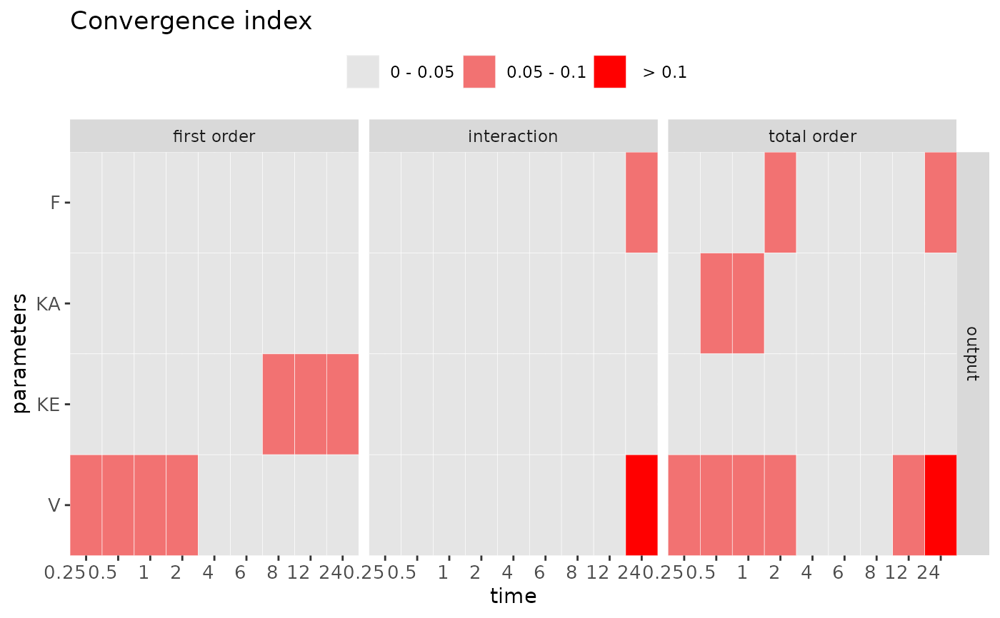

Visualize and check the sensitivity (or convergence) measurement with the given result.
Usage
check(x, times, vars, cutoff, out)
heat_check(
x,
order = c("first order", "interaction", "total order"),
vars = NULL,
times = NULL,
index = "SI",
cutoff = c(0.05, 0.1),
level = T,
text = F,
show.all = FALSE
)
# S3 method for class 'rfast99'
plot(x, vars = 1, cutoff = 0.1, ...)
# S3 method for class 'rfast99'
print(x, ...)Arguments
- x
a list of the storing information in the defined sensitivity function.
- times
a logical value or character to specify the display time in simulation.
- vars
a logical value or character to specify the display variable in simulation.
- cutoff
a value or vector to set the cut-off for sensitivity (or convergence) index. The default is 0.05 and 0.1.
- out
a logical value to print the checking result to the console.
- order
a vector of the interested output index, including
first order,interaction, andtotal order.- index
a character to choose sensitivity index
SI(default) or convergence indexCI.- level
a logical value to use continuous or discrete (default) output.
- text
a logical value to display the calculated indices in the plot.
- show.all
a logical value to show all testing parameters in the heatmap. The default is set to
FALSEto show only the influential parameters.- ...
additional arguments to customize the graphical parameters.
Value
The print function returns sensitivity and convergence indices
with given time-step in the console. The check method provides the summary of
parameter sensitivity and convergence according to the given cutoff.
It can distinguish the influential and non-influential parameter by the providing value
of cutoff. The plot function can generate the
time-course functional outputs of first order and interaction indices for each parameter.
The default output is the first model variable. The heat_check provides a convenient way
to visualize and distinguish the influential and non-influential parameter by the setting cut-off.
The convergence index can examine the stability of the sensitivity index.
To check convergence, be sure to conduct the replication in rfast99.
Details
The convergence of sensitivity indices for each parameter is using the approach proposed by Sarrazin et al. (2016). This method quantitatively assesses the convergence by computing the range of 95\ Using the global approach based on the heatmap visualization combined with the index "cut-off," can systematically distinguish between "influential" and "non-influential" parameters (Hsieh et al. 2018).
References
Sarrazin, F., Pianosi, F., & Wagener, T. (2016). Global Sensitivity Analysis of environmental models: Convergence and validation. Environmental Modelling & Software, 79, 135–152.
Hsieh, N. H., Reisfeld, B., Bois, F. Y., & Chiu, W. A. (2018). Applying a global sensitivity analysis workflow to improve the computational efficiencies in physiologically-based pharmacokinetic modeling. Frontiers in Pharmacology, 9, 588.
Examples
q <- "qunif"
q.arg <- list(list(min = 0.6, max = 1),
list(min = 0.5, max = 1.5),
list(min = 0.02, max = 0.3),
list(min = 20, max = 60))
params <- c("F","KA","KE","V")
set.seed(1234)
x <- rfast99(params = params, n = 200, q = q, q.arg = q.arg, rep = 20)
time <- c(0.25, 0.5, 1, 2, 4, 6, 8, 12, 24)
out <- solve_fun(x, model = FFPK, time = time, vars = "output")
#> Starting time: 2024-11-27 17:35:02.358448
#> Ending time: 2024-11-27 17:35:02.545626
# Check results of sensitivity measures
check(out)
#>
#> Sensitivity check ( Index > 0.05 )
#> ----------------------------------
#> First order:
#> F KA KE V
#>
#> Interaction:
#> KE V
#>
#> Total order:
#> F KA KE V
#>
#> Unselected factors in total order:
#>
#>
#>
#> Convergence check ( Index > 0.05 )
#> ----------------------------------
#> First order:
#> KE V
#>
#> Interaction:
#> F V
#>
#> Total order:
#> F KA V
#>
plot(out)

heat_check(out, show.all = TRUE)

heat_check(out, index = "CI")
